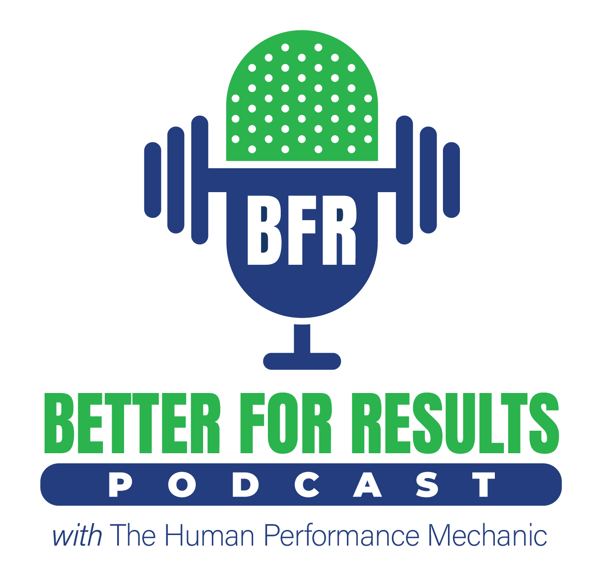

Explore our podcast, research, provider directory, and community resources.
Our podcast dives deep into the science, application, and business of Blood Flow Restriction training. Featuring interviews with leading researchers, clinicians, and coaches who are pushing the boundaries of BFR.
Available on all major podcast platforms. New episodes released regularly.

Search our directory of certified BFR professionals near you.
Looking for a certified BFR professional in your area? Our provider directory connects patients and athletes with trained BFR practitioners who have completed our certification program.
If you're a certified BFR Pro, you can get listed in our directory to attract new patients and clients looking for BFR services.
Dr. Rolnick's BFR research has been published in leading peer-reviewed journals. View his full publication list on PubMed.
Watch Dr. Rolnick discuss BFR training, research, and clinical applications on video.
Connect with fellow BFR professionals, share experiences, and stay up to date with the latest in BFR.
Join our private Facebook community to discuss BFR with fellow certified professionals.
Visit Facebook →Follow @thehpm for daily BFR tips, research highlights, and behind-the-scenes content.
Follow on Instagram →Subscribe for educational videos, workshop highlights, and BFR technique demonstrations.
Subscribe on YouTube →Support The BFR Pros on Patreon and get access to exclusive content, early podcast episodes, Q&A sessions, and more. Your support helps us continue producing high-quality, evidence-based BFR education.
Support on PatreonBlood Flow Restriction training and The BFR Pros have been featured by leading media outlets worldwide.


Nick Featured In


Featured Articles
Get started with our comprehensive certification and join a growing community of BFR professionals.
Get Certified — $449

![[P]REHAB Podcast](images/podcast-appearances/[P]REHAB Podcast.jpg)